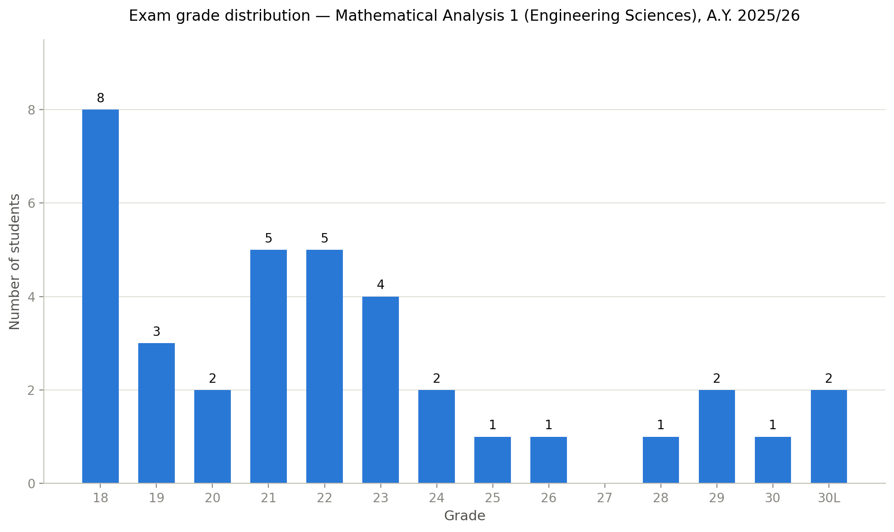

This is the website for the course Mathematical Analysis 1,
Fall 2025. Please visit this website for all updates for this
module. We will be following the book Mathematical
Analysis 1 by Claudio Canuto and Anita
Tabacco (Pearson publishing). It is recommended to
obtain a copy, as it provides many additional exercises and
examples.
Syllabus: here you will find an overview of the topics covered in this course.
Guidelines: these are the ground rules and some additional basic information, particularly for the exams.
Timeline: a comprehensive day-by-day plan for the semester (refresh often).
Contact me: the best way to get in touch is by email.
| 15/7/2026 |
So far, 37 students have passed the
course this year. Among students who regularly did the
homework the pass rate is very high: 63% (12 out
of 19).  |
| 15/7/2026 |
Fourth call exam statistics: Registered for exam: 80 Attended exam: 45 Submitted blank exam: 9 Submitted non-blank exam: 36 Admitted to oral exam: 10 Passed oral exam: 9 Pass rate: 25% (9/36) |
| 14/7/2026 |
The fifth call will be on Tuesday
1/9 and the sixth call will be on Friday
11/9. |
| 8/7/2026 |
The results of the written part
of the fourth call are here. The schedule of the oral exams is here. It is your responsibility to arrive on time. You may exchange times with a fellow student if you wish. Please inform me if you do so. I will not be able to make changes for you. You may bring notes and books with you. The oral exams are a public event, and anyone can attend (so long as they remain quiet). |
| 5/7/2026 |
The fourth call is on Tuesday 7/7 between 10:00-12:30. Please arrive at 9:30. The location is Aula C2. |
| 5/7/2026 |
Third call exam statistics: Registered for exam: 105 Attended exam: 63 Submitted blank exam: 12 Submitted non-blank exam: 51 Admitted to oral exam: 8 Passed oral exam: 7 Pass rate: 14% (7/51) |
| 27/6/2026 |
The results of the written part
of the third call are here. The schedule of the oral exams is here. It is your responsibility to arrive on time. You may exchange times with a fellow student if you wish. Please inform me if you do so. I will not be able to make changes for you. You may bring notes and books with you. The oral exams are a public event, and anyone can attend (so long as they remain quiet). |
| 20/6/2026 |
The third call is on Thursday 25/6
between 10:00-12:30. Please arrive at 9:30.
Seating is determined by the first letter of your last
name, as follows: Last name A-I in Aula A1 Last name J-Z in Aula A4 |
| 4/5/2026 |
Exercise sheet 14 (and its solution) are
now available. |
| 25/4/2026 |
The next calls will be on 25/6/26 and
7/7/26. Details are here. |
| 22/2/2026 |
Second call exam statistics: Registered for exam: 141 Attended exam: 101 Submitted blank exam: 34 Submitted non-blank exam: 67 Admitted to oral exam: 21 Passed oral exam: 11 Pass rate: 16% (11/67) |
| 14/2/2026 |
Second call oral exams: here
is the schedule. It is your responsibility to
arrive on time. You may exchange times with a fellow
student if you wish. Please inform me if you do so. I
will not be able to make changes for you. You may bring notes and books with you. The oral exams are a public event, and anyone can attend (so long as they remain quiet). |
| 30/1/2026 |
Please see the "guidelines" tab for
updated exam rules for the next calls |
| 30/1/2026 |
First call exam statistics: Registered for exam: 160 Attended exam: 122 Submitted blank exam: 45 Submitted non-blank exam: 77 Admitted to oral exam: 23 Passed oral exam: 12 Pass rate: 16% (12/77) |
| 28/1/2026 |
First call oral exam: schedule your time. |
| 19/1/2026 |
Here
are some exercises from last year (24/25). These were
prepared by Prof. Tanimoto (the previous instructor) so
there will be some differences in style, notation and
topics. These exercises will give you further
opportunities to practice what we've learned. |
| 8/1/2026 |
The last exercise sheet (14) on ODEs will
not be graded, it is for yourselves to practice. It will
be uploaded a bit later than usual together with the
solutions. |
| 2/1/2026 |
Here is the MOCK
EXAM. Please also complete this evaluation
form to let me know what you thought about the
course; it is completely anonymous. |
| 29/12/2025 |
Here is a file with a summary of some IMPORTANT FORMULAS to
REMEMBER. |
| 22/12/2025 |
Here are the FULL
LECTURE NOTES in one single file, and a SYLLABUS with a summary
of the course. |
| 5/12/2025 |
Registration for the first session of the
exam is now open on Delphi. |
| 29/11/2025 |
Classes on 22 and 23 December are
CANCELLED. The lost time (3 hours) will be made up by
starting at 9:00 (instead of 9:30) on all TUESDAYS and
THURSDAYS in DECEMBER. |
| 27/11/2025 |
Exercises class will be ONLINE tomorrow.
Please join at 14:15 so that any technical problems can
be resolved, and the class can start at 14:30. This
is the link. |
| 29/9/2025 |
Class is CANCELLED this Thursday (2/10).
It will be made up by making 6 other classes longer by
15 minutes. |
| 27/9/2025 |
Exercise classes times have changed to
Fridays between 14:00-15:30 in B3 |
| 25/9/2025 | Please complete this form
with your name and email address |